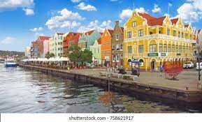
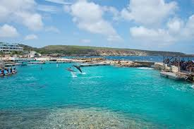

Curaçao, a Dutch Caribbean island, is known for its inlet beaches and extensive coral reefs with abundant marine life.
The stunning, almost fluorescent blue colors of the ocean, along with the white sandy beach, make Curacao the number one beach, and a must on your Curacao to-do list.

Curaçao Sea Aquarium is Curaçao's premier location for marine life exploration.